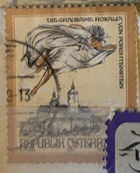
| SOURCE | TITLE| IMAGE MATCH | click to source page |
| Dreamstime.com | Stamp Printed in the Austria Shows the Cruel Lady of Forchtenstein Castle Editorial Photography - Image of fortress, austria: 99248427 | 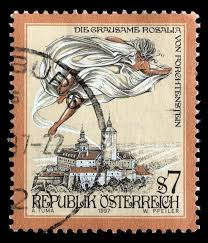 |
| HipStamp | 1997, Austria 7 Sch, Used, Sc 1718 | Europe - Austria, General Issue Stamp / HipStamp | 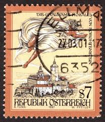 |
| eBay | Österreich 1997 - Grausame Rosalia von Forchtenstein - 7 Schilling - Mi.Nr. 2212 | eBay | 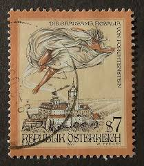 |
| eBay | Austria - 1997 - 7Sh - Tales and Legends of Austria - #17791 | eBay | 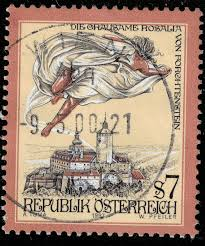 |
| eBay | 1997 DEFINITIVES S7 Stamp AUSTRIA ÖSTERREICH Republik Osterreich TKS346* | eBay | 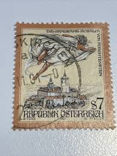 |
| eBay UK | Austria 1997 Cruel Rosalia of Forchtenstein Fine Used SG 2455 VGC | eBay UK | 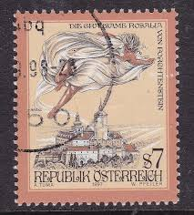 |
| Poppe Stamps | Poppe Stamps: Austria, 1997, 2460, Folktale And Legends, Mythology And Mythical Creatures, Castles - stamps for sale by theme and country |  |
| HipStamp | 1997, Austria 7 Sch, Used, Sc 1718 | Europe - Austria, General Issue Stamp / HipStamp |  |
| eBay | Machine Cancel Orange Used European Stamps for sale | eBay | 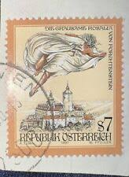 |
| eBay | AK Panoramablick vom Füssener Jöchle 1821 m, Grän im Tannheimer Tal, versendet | eBay | 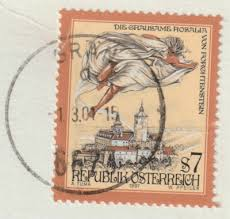 |
| eBay | 1997 Austria SC# 1718 - The Cruel Lady of Forchenstein Castle, Burgenland -Used | eBay | 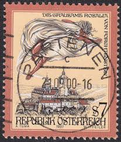 |
| ProBoards | Postmark Calendar | The Stamp Forum (TSF) |  |
| Dreamstime.com | Castle Forchtenstein editorial image. Image of architecture - 264964560 | 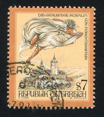 |
| Dreamstime.com | Fort Rosalie Stock Photos - Free & Royalty-Free Stock Photos from Dreamstime | 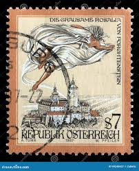 |
| Todocolección | osterreich austria 3 heller, franz josef año 19 - Buy Antique stamps of Austria on todocoleccion |  |
| allnumis.com | 7 schilling - Terrible Rosalia of Forchtenstein/Burgenland 1997, Tales and Legends - Austria - Stamp - 4268 | 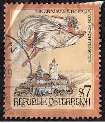 |
| Dreamstime.com | The Cruel Rosalia of Forchtenstein, Sages and Legends Serie, Cir Editorial Stock Image - Image of issue, cruel: 116031419 | 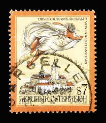 |
| ProBoards | Postmark Calendar | The Stamp Forum (TSF) | 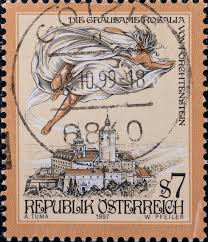 |
| ebid.net | BANGLADESH, FRUIT, Jackfruit, brown 1973, 5p on eBid United States | 190360047 | 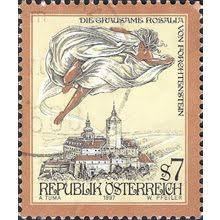 |
| Todocolección | osterreich austria 5 heller, año 1916. - Compra venta en todocoleccion | 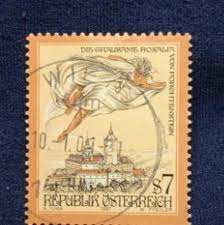 |
| eBay | Orange Used Austrian Stamps | eBay | 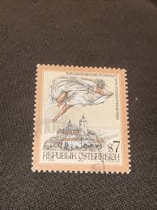 |
| Aukro | Rakusko 1997 Mi 2212 ine raz. | Aukro | 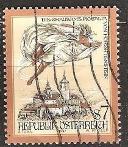 |
| Osta | 31-20 varia austria (211983096) - Osta.ee | 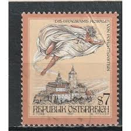 |
| Osta | Austria Forchtensteini kindlus. Legendid 1997 *Kustutatud (247552572) - Osta.ee | 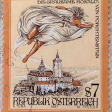 |
| Alamy | Postage stamp from Austria in the series issued in 1997 Stock Photo - Alamy | 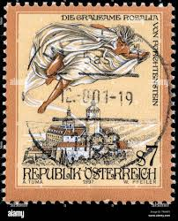 |
| 123RF | Moscow, Russia - January 16, 2018: A Stamp Printed In Austria Shows The "Ghost Of Rosalia" Over Forchtenstein Castle, Series "Tales And Legends Of Austria", Circa 1997 Stock Photo, Picture and Royalty Free Image. Image 93826248. |  |
| Galéria Savaria | mese bélyegek - Gyűjtemény - Bélyeg - Külföldi bélyeg | Galéria Savaria Archív Katalógus | 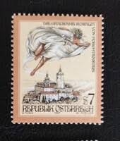 |
| Todocolección | sello** de austria 2007, yt 2512 - Compra venta en todocoleccion | 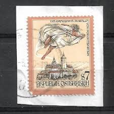 |
| eBay | Austria - 1997 - 7Sh - Tales and Legends of Austria - #17792 | eBay | 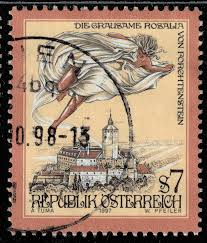 |
| eBay | Austria - 1997 - 7Sh - Tales and Legends of Austria - #17790 | eBay | 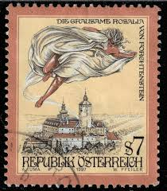 |
| esam.ir | یک قطعه تمبر خارجی نو اتریش طبق تصویر | 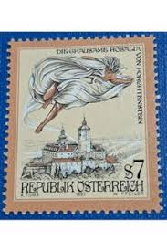 |
| ProBoards | Postmark Calendar | The Stamp Forum (TSF) | 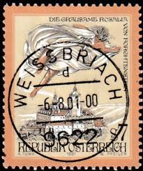 |
| Amazon.com | Amazon.com: Austria 2212,2226 (Complete.Issue.) unmounted Mint/Never hinged ** MNH 1997 Say and Legends (Stamps for Collectors) Fairy Tales/Myths/Legends : Toys & Games | 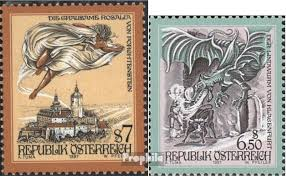 |
| Alamy | The cruel rosalia of forchtenstein hi-res stock photography and images - Alamy | 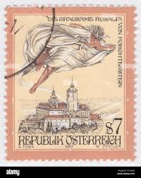 |
| تمبرستان | 1 عدد تمبر 200مین سالگرد مرگ فرانچسکو گوآردی - نقاش - ایتالیا 1993 | 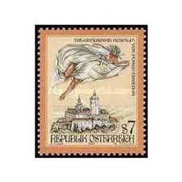 |
| eBay UK | Zell am See cancel Austria 2001 on Grausame Rosalia 7s VGC | eBay UK | 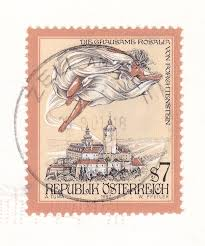 |
| eBay UK | Liechtenstein 1912 Austrian Post Office Prince John II set of 3, used | eBay UK | 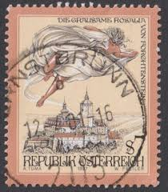 |
| eBay | AUSTRIA . 1997 Mystical Legends 7s . Mint Never Hinged | eBay |  |
| Shutterstock | 120 resultados de imágenes, fotos de stock e ilustraciones libres de regalías para Rosalia de castro | Shutterstock | 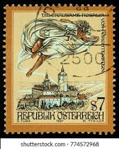 |
| Aukro | Známka Rakousko | Aukro | 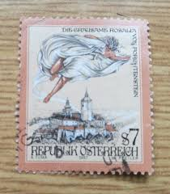 |
| eBay | 1997 DEFINITIVES S7 VF MNH AUSTRIA ÖSTERREICH | eBay | 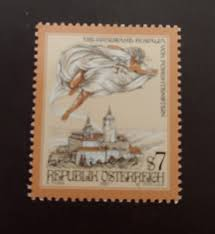 |
| ebid.net | SPAIN, El Cid Campeador, red 1939, 10cms, #5 on eBid United States | 195099641 | 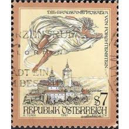 |
| Alamy | Letter to debtor hi-res stock photography and images - Alamy | 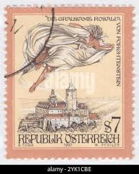 |
| Bob Shop | Austria - Austria - 1997/8 - Used for sale in Kraaifontein (ID:670845316) | 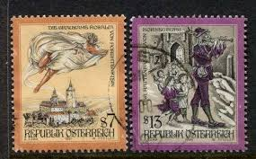 |
| helping my grandpa to find out how much any of them might worth. (1) : r/stamps | 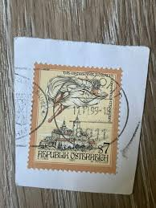 | |
| eBay | Vintage Postcard, INNSBRUCK-ALTSTAD, AUSTRIA, 2000, Multi-View Of Old Town,To OH | eBay | 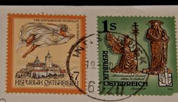 |
| eBay | Austria 1997 Myths Legends Folk Tales Dragon Cattle Castle Boat 3v set MNH | eBay | 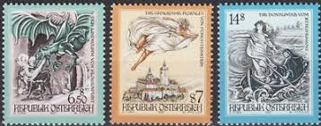 |
| eBay.de | Österreich Feldpost Briefstücke AUCON SFOR 1502 a, 2000 | eBay.de | 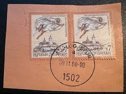 |
| Shutterstock | 7+ Thousand Paoli Nave Royalty-Free Images, Stock Photos & Pictures | Shutterstock | 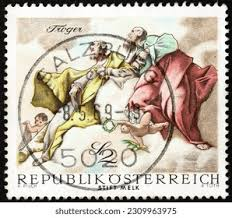 |
| eBay | Specimen, Austria Sc1740 Actor Oskar Werner (1922-84) | eBay | 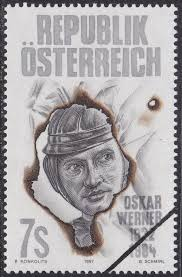 |
| eBay | Austria 1995 Europe CEPT imperforated black proof | eBay | 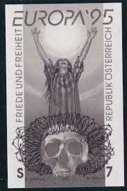 |
| Amazon.com | Amazon.com: Austria 2308 (Complete.Issue.) unmounted Mint/Never hinged ** MNH 2000 Say and Legends (Stamps for Collectors) Fairy Tales/Myths/Legends : Toys & Games | 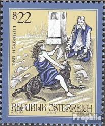 |
| Colnect | Stamp: The Black Lady of Hardegg (Austria(Sages and Legends) Mi:AT 2273,Sn:AT 1775,Yt:AT 2102,Sg:AT 2456,AFA:AT 2165,ANK:AT 2304,Un:AT 2102 📮 | 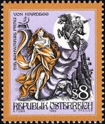 |
| mintindia.in | www.mintindia.in: www.mintindia.in:We have launched this website with primary objective to spread education about various coins of India and around the earth to help each numismatist, Introducing huge collections of the antique material | 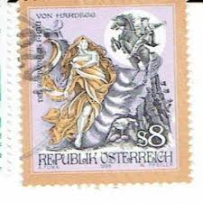 |
| eBay | Österreich 1989 illustrierter FDC Todestag Rudolf Jettmar Maler | eBay | 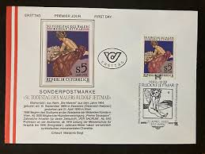 |
| lbdphilately.com | Products | |
| eBay | Austria 1999 Legends Myths Folk Tales Stories Horses Farming 3v set MNH | eBay | |
| lbdphilately.com | Products | |
| Linns Stamp News | Catalog options for the whole wide world | |
| eBay | Specimen, Austria Sc1677 Europa, Skull | eBay |